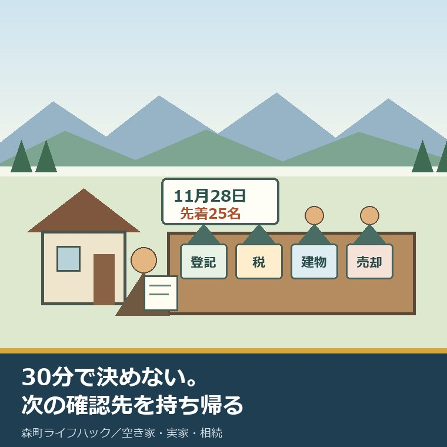
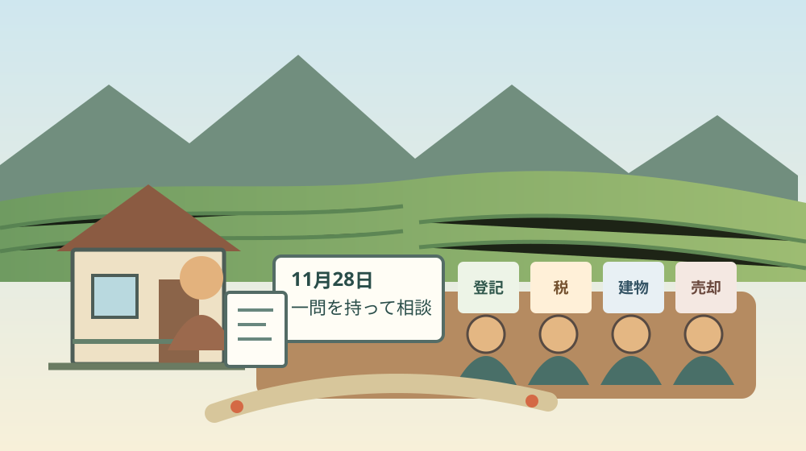
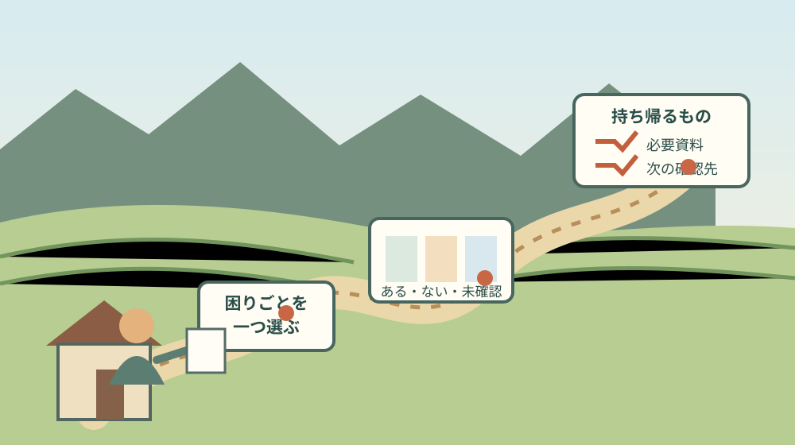

森町の空き家無料相談会2026｜11月28日・25名

この記事の要点
Q. 30分の無料相談会で、何を相談すればよいですか。
A. 売るか残すかを30分で決める必要はありません。登記、税、建物、売却のうち、家族が最も詰まっている論点を一つに絞ります。空き家の住所、名義、手元の資料、希望を一枚にし、必要書類と次の確認先を持ち帰る時間にしてください。
森町に実家があり、誰も住まなくなった。登記、固定資産税、建物の傷み、売却のどこから手を付けるか。家族の迷いが四方向へ分かれたとき、専門家が同じ会場にいる相談会は入口になります。
静岡県は2026年11月28日（土）に、袋井市と森町の合同で空き家の無料相談会を開きます。会場は森町内ではなく、袋井市月見の里学遊館です。
この記事は、静岡県の「空き家等について」と県内会場チラシを2026年9月8日に確認して書きました。森町の空き家バンクと第2期森町空家等対策計画も照合しています。
受付の空き、担当する専門家、個別案件の答えは公表資料だけでは確定できません。予約時と参加直前に、事務局へ確認してください。
11月28日の袋井・森会場で確定していること
2026年度の袋井・森会場は、11月28日（土）10時から15時まで開かれます。場所は袋井市上山梨4丁目3番地の7、袋井市月見の里学遊館2階集会室A・Bです。
相談時間は1組につき30分程度です。完全予約制で、予約がない場合は相談を受けられないと県が明記しています。
定員は先着25名です。県内の標準会場は20名ですが、袋井・森会場は25名へ増やされています。
25名は、2026年9月8日時点の残り人数ではありません。会場全体の定員です。県ページには、この会場の受付終了表示はありませんが、空席を保証する表示もありません。
申込先は静岡県空き家対策推進協議会事務局です。電話番号は054-247-3823。電話受付は平日10時から12時、13時から16時です。
申込期間は2026年8月3日から、各会場開催日の3営業日前までです。11月28日から土日祝を除いて遡ると11月25日相当ですが、先着25名で先に閉まります。
申込みでは、開催会場のある市町内に空き家を持つ方、または住む方が優先されます。森町に空き家を持つ町外家族は、対象関係を予約電話で伝えてください。
| 確認項目 | 袋井・森会場 | 家族が予約時に確認すること |
|---|---|---|
| 開催日 | 2026年11月28日（土） | 受付が続いているか |
| 時間 | 10時～15時、1組約30分 | 指定された開始時刻 |
| 会場 | 月見の里学遊館2階 集会室A・B | 駐車・公共交通・受付場所 |
| 定員 | 先着25名 | 人数か組数か、同伴可否 |
| 申込 | 電話、完全予約制 | 相談分野と持参資料 |
25名は「25組」と読み替えない
静岡県の本文は袋井・森会場を「25名まで」と表記しています。一方、相談時間は「1組につき30分程度」です。
この二つから、25組の予約枠があるとは断定できません。夫婦やきょうだいで参加するときの人数扱いも、公表本文には書かれていません。
意外ですが、いちばん先に確認したいのは空き家の内容ではなく、同伴する家族を含めた予約人数です。誰が参加するかを決めてから電話すると、定員の数え方をその場で聞けます。
遠方の相続人がオンライン参加できるか、会場で電話をつなげるかも未確認です。オンライン相談会は別日程で、2026年9月8日時点では受付終了と表示されています。
会場チラシは駐車場240台と案内しています。袋井駅から路線バスで向かう経路も示されていますが、当日の時刻は交通事業者の案内で再確認が必要です。

相談できるのは登記・税・建物・売却の接点
静岡県は、司法書士、税理士、建築士、宅建士などの専門家が空き家の相談に答えると案内しています。管理、活用、処分、相続、住み替え、税制が例示されています。
司法書士へ聞く候補は、登記名義、相続登記、共有、必要な戸籍などです。相続人の範囲や書類は事情で変わるため、資料を見せて次の手順を確認します。
税理士へ聞く候補は、保有中の負担、売却時の税、相続税との関係です。税額は取得時期、取得費、利用状況、売却時期などで変わり、住所だけでは出ません。
建築士へ聞く候補は、雨漏り、傾き、耐震、改修と解体の見方です。30分の会場相談は現地調査ではないため、建物の安全性を確定する場にはなりません。
宅建士へ聞く候補は、売却・賃貸の進め方、一般流通と空き家バンクの違い、査定前の資料です。査定額だけでなく、境界、接道、名義を確認する順番は、森町で家を売る前に確認する項目で整理しています。
一つの質問が複数分野へまたがる場合があります。例えば「相続した実家を売りたい」は、名義、税、建物状態、売却条件に分かれます。
相談前に四分野へ分けるのは、担当を自分で断定するためではありません。事務局が案内しやすい言葉へ、困りごとをほどくためです。
持参資料は「ある物」と「ない物」を分ける
県のチラシは、登記事項証明書の写し、戸籍の写し、固定資産税の評価証明書などがあると便利と案内しています。必ず持参する物ではないとも明記しています。
そのため、相談会のためだけに全書類を急いで取得する必要はありません。手元にある納税通知書、権利証、古い契約書、図面、修繕記録を先に並べます。
空き家の住所と郵便住所だけでは、地番や家屋番号が分からない場合があります。分からない欄は空欄にせず「未確認」と書けば、何を取り直すか質問できます。
相続関係を説明するときは、誰が亡くなり、いつ相続が始まり、現在の連絡窓口が誰かを書きます。戸籍と法定相続情報一覧図の違いは、森町の実家手続での比較も確認材料になります。
建物は、外観四方向、屋根、雨樋、室内の水跡、設備メーターを安全な範囲で撮ります。危険な屋根や床へ上がって写真を増やす必要はありません。
資料がないこと自体も相談事項です。「何もない」と言うより、「納税通知書はある、登記は未取得、境界図は不明」と三列で示すと次が決まります。
30分は答えを出す時間ではなく、次を決める時間
30分で、家族の相続、建物調査、税額計算、売却条件をすべて終えることはできません。相談者側にも専門家側にも、時間の限界があります。
家族が既に負担しているのは、固定資産税だけではありません。草刈り、換気、郵便、近隣連絡、帰省、交通費、書類探しが重なっています。
その負担を無視して「資料を全部そろえてから来てください」とは言えません。足りない資料を見つけ、取る順番を持ち帰る使い方にも価値があります。
相談会は、専門家を一部屋に集めたから価値があるのではありません。誰がいつ、どの資料を持ち、次にどこへ行くかまで持ち帰れて初めて役に立つ。私はそう考えます。
制度の立派さではなく、ご家族が実際に動ける段取りで評価する。ここは曖昧にしたくありません。
相談メモの最上段には「今日決めないこと」も書きます。売却価格、解体発注、遺産分割など、資料がないまま決めない事項を区切ります。
森町では相談後の管理が続く
第2期森町空家等対策計画は、2023年11月から2032年度末までの10年間を計画期間とし、森町全域を対象にしています。
町が10年単位で空き家を見ていても、一軒の鍵、草、雨漏り、郵便は日ごとに動きます。計画の位置づけは、第2期計画から実家の位置を確かめる記事で詳しく読めます。
森町空き家・空き地バンクは、町が物件情報を登録し公開する仕組みです。町は交渉、契約、物件管理を行わないと案内しています。
相談会で空き家バンクを勧められても、登録すれば町が売却を代行する意味にはなりません。土地と建物の所有者が異なる場合は、土地所有者の同意書も必要です。
売るか残すかが決まらない期間にも、台風や強雨は来ます。平時の外回り記録は、森町の空き家を9月に確認する3点を使えます。
相談と管理は別工程です。専門家へ相談した日を境に、所有者の管理負担が自動で止まるわけではありません。
良い点：四つの入口を一日で切り分けられる
袋井・森会場の良い点は、登記、税、建物、不動産の入口が同じ日にあることです。どの専門家へ行くか分からない家族には、最初の振り分けになります。
完全予約制で1組約30分と示されている点も、予定を組む材料になります。帰省や家族同行が必要なら、相談の前後へ移動時間を置けます。
森町に会場を単独で設けず、袋井市の施設を合同会場にしたことは、専門家と枠をまとめる実務上の工夫と考えられます。25名は標準会場より5名分大きい定員です。
町内の持ち主だけでなく、会場市町に住む方も優先対象です。所有地と居住地のどちらで関係するかを伝えられます。
無料で入口を切り分けられることと、その後の業務も無料であることは別です。見積、委任、調査、申請へ進む前に、費用と契約主体を確認してください。
注文したい点：25名の内訳と当日の流れが見えない
その上で注文したい点があります。県ページからは、25名を組数とどう対応させるか、家族同伴をどう数えるかが分かりません。
予約時刻の割り当て、受付開始時刻、専門家をまたぐ相談の流れも、公開本文だけでは読み取れません。電話で聞く項目が残ります。
どの分野の専門家が袋井・森会場へ何人来るかも未確認です。「等」という案内を、希望する全資格者へ必ず同じ日に相談できる保証へ変えてはいけません。
合同会場は袋井市にあります。森町の山側から出る家族、町外から実家へ寄る家族には、移動と現地確認を同日に詰め込まない配慮が要ります。
森町の担当窓口と県の申込先は別です。相談会の予約は県協議会事務局、町の空き家バンク相談は森町定住推進課です。電話番号を一つにまとめないでください。
町や県の担当者も、限られた人員で問い合わせを受けています。質問を一枚にまとめることは、相談者だけでなく案内する側の聞き直しも減らします。

対案・結論：今日、予約電話のメモを作る
今日できる小さな一歩は、事務局へ電話をかける前のメモを一枚作ることです。上から、参加者名、人数、空き家所在地、希望会場、相談分野を書きます。
困りごとは一文にします。「父名義の森町の実家を相続したが、登記と売却のどちらを先にするか知りたい」のように、事実と質問を分けます。
予約電話では、受付状況、参加人数の数え方、指定時刻、持参資料、希望分野の相談可否、当日の受付場所を聞きます。
相談当日は、答えだけでなく「次に誰へ」「何を持って」「いつまでに」を書きます。分からなかった事項も消さずに残します。
30分で家の行き先を決めない。一つの詰まりをほどき、次の確認先を持ち帰る。袋井・森会場を使う目的は、そこまでで十分です。
受付が終わっていた場合も、家族の整理は無駄になりません。森町定住推進課や、論点に合う専門家へ同じ一枚を見せられます。
家族に残す記録
家族記録の基本欄は、空き家の住所、地番、家屋番号、登記名義、相続発生日、固定資産税の通知先です。分からない項目は未確認と記します。
建物欄には、建築年、構造、雨漏り、傾き、設備停止、浄化槽、井戸、増築、附属建物を書きます。目視と専門家判断を同じ欄にしません。
土地欄には、境界資料、接道、私道、農地、山林、擁壁、水路を置きます。家の住所だけで売却対象の全筆を表したことにはなりません。
管理欄には、鍵の保管者、草刈り、換気、通水、郵便、保険、近隣連絡、災害後点検の担当と実施日を残します。
相談欄には、予約日、相談日時、参加者、相談分野、見せた資料、回答、次の窓口、期限、費用の有無を書きます。
戸籍や登記識別情報などの個人情報は、共有先を限定します。相談用の写しへ不要な番号がある場合は、提出先へ扱いを確認してください。
大石の視点
ここからは、大石浩之（磐田市／不動産業）としての意見です。体験ストックに今回の相談会へ参加した実例はないため、経験した出来事としては書きません。
私は、空き家の相談で最初に売却価格を出すより、誰の家で、何に詰まり、誰が動けるかを分けたいと考えます。相談会でも同じです。
専門家が四分野にまたがるのは心強い。一方、30分の短さには迷いもあります。準備がない家族ほど話す量が増え、核心へ着く前に時間が終わり得るからです。
だから、資料の完全さを求めるのではなく、問いを一つに絞ります。資料がないなら、ない物の一覧を持って行けばよい。次に取る書類が分かれば前進です。
空き家を持つ家族は、すでに時間、移動、維持費を払っています。その負担を認めず、活用や売却の正論だけを重ねても続きません。
相談は決断の締切ではなく、判断材料を一つ増やす場です。11月28日に結論を出さなくても、家族の次の担当が決まれば価値があります。
まとめ
2026年11月28日の空き家無料相談会は、袋井市月見の里学遊館で開かれる袋井・森合同会場です。10時から15時、完全予約制、先着25名、1組約30分です。
25名は残席でも25組でもありません。家族同伴の数え方、空き、担当分野、指定時刻は、申込先の054-247-3823へ確認してください。
今日の一歩は、空き家所在地、参加人数、相談分野、困りごと一文、手元資料を予約電話用の一枚へ書くことです。
相談会では売るか残すかを急いで決めず、必要資料、次の確認先、期限を持ち帰ります。判断を保留しても、段取りが一つ増えれば家族は前へ進めます。
よくある質問
Q1. 森町の空き家無料相談会は、予約なしでも相談できますか。
A1. できません。2026年11月28日の袋井・森会場は完全予約制です。静岡県空き家対策推進協議会事務局へ電話で申し込みます。先着25名に達すると、期限前でも締め切られます。2026年9月8日時点の受付状況は電話で確認してください。
Q2. 相談会には、どの書類を持って行けばよいですか。
A2. チラシは、登記事項証明書の写し、戸籍の写し、固定資産税の評価証明書などがあると便利と案内しています。ただし必須持参物ではありません。手元にない書類を急いで買い足す前に、空き家の住所、名義、困りごと、希望を一枚に整理してください。
Q3. 30分で売却や相続の結論まで出せますか。
A3. 30分程度は、個別の売却価格、登記、税額、建物状態をすべて確定する時間ではありません。登記、税、建物、売却のうち最も詰まっている論点を一つ決め、必要資料、次の相談先、期限を持ち帰る時間として使うと、相談後の家族の動きが具体化します。
開催状況、受付、担当者、制度、費用は変わる場合があります。登記、税務、相続、建物、契約の個別判断は、司法書士、税理士、建築士、宅建士、弁護士など該当分野の専門家へ確認してください。
参考にした公式情報
- 空き家等について／静岡県（2026年9月3日更新。袋井・森会場の日程、会場、時間、30分程度、完全予約制、25名、申込先、受付時間を2026年9月8日に確認）
- 令和8年度 静岡県 空き家の無料相談会チラシ／静岡県（全2ページ。相談分野、持参すると便利な資料、会場交通を2026年9月8日に確認）
- 第2期森町空家等対策計画／静岡県森町（計画期間2023年11月～2032年度末、対象は森町全域、窓口を2026年9月8日に確認）
- 森町空き家・空き地バンク／静岡県森町（制度の役割、登録の流れ、町は交渉・契約・管理を行わない点を2026年9月8日に確認。更新日2026年7月28日）

磐田市で小さな不動産業を営みながら、森町の空き家・農地・実家じまいのご相談を受けています。地域と不動産実務をつなぐ目線で、確認の順番まで具体的に書きます。
最終確認日：2026-09-08 ／ 本記事は公表情報と執筆者の見解を分けて記載しています。受付状況と担当分野は予約時に事務局へ、個別判断は該当分野の専門家へご確認ください。